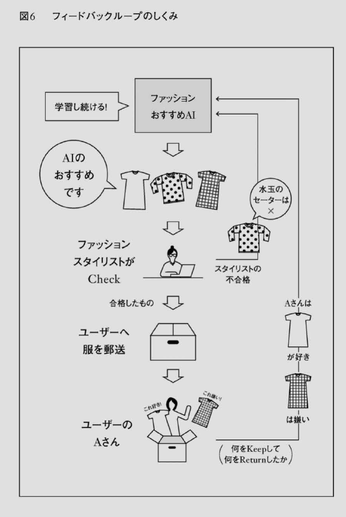
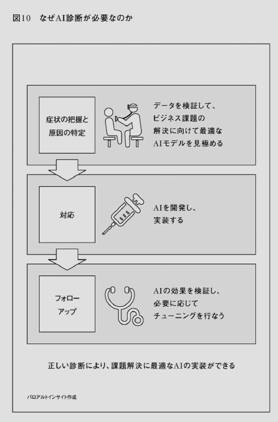
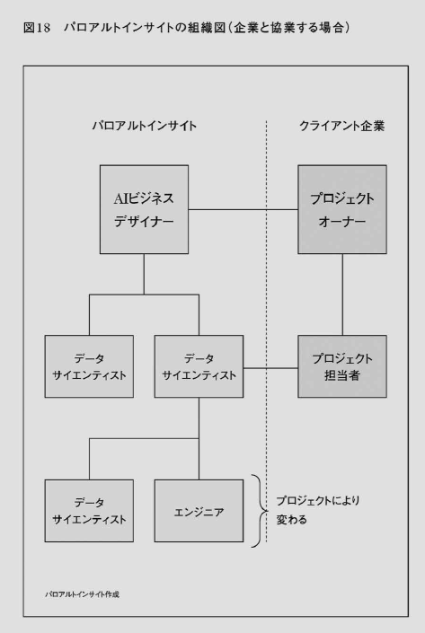

- DAX25-30【書籍】いまこそ知りたいAIビジネス
 はじめに
はじめに- 第１章ここがヘンだよ、日本のAIビジネス
 「AI＝ロボット」という勘違い
「AI＝ロボット」という勘違い 「AIが動いている姿を見せてください」
「AIが動いている姿を見せてください」- 「AIの〇〇ちゃん」と擬人化することの弊害
- 「AI”が”XXするのでばなく、「AI”で”XX する」
- なぜ日本人ぱ「AIが仕事を奪う」と考えるのか
- エンジニアを社内にかかえるアメリカ、外注する日本
- 日本では、ソフトウェアエンジニアの8割がシステムインテグレーター（情報システムの構築・運用等を請け負う企業）やIT企業に所属している
- あらゆる産業のベースにAIの考え方が必要になるからだ。非IT業界においても、AIに対する基礎的な知識が必要になってくるし、AIの浸透で私たちの働き方も変わってくる。
- POINT
- AIを擬人化すると、機会損失が起こる
- AIは課題解決のためのツールにすぎない
- AIを作るのも、それに指示を与えるのも、人間である
- AIは万能ではない。神格化すべきではない
- 「AIビジネスは自分には関係ない」という勘違い
- 中小企業ほどAI活用が重要になる
- 「100年前に電気の登場ですべての業界が変わったのと同じように、今後数年間にAIが変革しない業界はないだろう」
- AI導人は、実は局地的であればあるほど力を発揮する側面を持っている。だから、中小企業ほどAIを効果的に活用することが重要になるのだ。
- 街の歯科医にもAIは必要
- 企業のサイズや業種にかかわらず、今後皆さんがAIの影響なく仕事を続けることはありえない
- AIを活用すれば業績が伸びる業種は全体の7割

- 今、正しくAIの導入をすれば飛躍的に事業を成長させるチャンス
- POINT
- 企業サイズや業種にかかわらず、AIはインフラになる
- 中小企業ほど、AIの導入によるビジネスインパクトは大きい
- 第２章AIビジネスの最先端を見てみよう
- AIはどんなシーンで活用されているか
- コーディネートをAI＋スタイリストで
- ユーザーにすすめる商品をAIで決める
- コラボレイティブ・フィルタリング（似たプロフィールの個人同士を比較検証するプロセス）と呼ばれる、おすすめ機能でよく使われる機械学習の手法のひとつだ。
- AIで新しい基準値を作る
- AIの判断をスタイリストに検証させる
- AIビジネスの現場では「フィードバックループ」と呼び、AIの精度を高めるために必要不可欠なステップだ。
- 
- AIでトレンドを予測する
- 配送の最適化にもAIが使われる
- 現在、シリコンバレーのAービジネス現場では、「すべての経営会議にデータサイエンティストが参加するべきである」と言われている。これは、これからのAービジネスの基本的な考え方になるだろう。
- 商品のピックアップもAIで管理
- 顧客中心主義をできるのはデータサイエンスの力
- 「小売業界にとって顧客中心主義は、今後いちばんの優先事項になるでしょう。大手の小売はレガシーシステム（複雑な基幹システム）を使っているため、AI機能搭載などの変更が非常に難しい状態
- 「顧客中心主義」を実現するためのパワフルなツール、それこそがデータサイエンスであり、データサイエンスの力で作るさまざまなAIだということ
- すべての仕事がAIに置きかわるわけではない
- AIを検証し、学習トレーニングをするスタイリストの役目がそれにあたる。また、そもそもAIのプログラミングを考える。どこにAIを配置データサイエンティストや、仕事上の課題を発見し、すべきかを考える仕事（これがAービジネスデザイナーの仕事である）この先も人間がすべき仕事といえるだろう。
- POINT
- ビジネスのあらゆるシーンでAIの活用が進んでいる
- AIは「顧客中心主義」を実現するための強力なツールである
- AIと人間の協働スキームをつくる
- コンピュータが得意なこと、人間が得意なこと
- 「人が得意とすることはコンピュータにとって非常に難しく、コンピュータが得意なことは人にとって難しいことが多い。仕事を奪い合う敵ではなく、人とコンピュータがそれぞれの強みを生かすチームメートになれれば、企業のパフォーマンスが最大化するだろう」
- テスラの自動運転は、人とAIの協動で進化する
- 「人間＋マシン＝スーパーパワー」を生み出すことができる企業が勝ち残ることができる
- POINT
- これからの企業の優位性は、AIと人間の協働化をいかにうまく進められるかにかかっている
- AIはビジネスモデルを変える
- AIとAR技術で「試し塗り」が可能に
- イノベーションぱ順客の課題解決から生まれる
- AIビジネスとは、単にAIを導人するだけではない
- AIビジネスを考えるときは、ニーズや課題を抽出する必要があるということ。ニーズや課題解決にAIが寄与できるとなると、新しいビジネスモデルが生まれ、イノベーションが起こるということだ。
- 日本企業に今求められているのは、ビジネスモデルの変革
- AIビジネスは、どこで収益を得ればいいか
- カメラの概念を変えたセキュリティサービス
- この商品の特徴は、家の中に置かれたカメラレンズに映った出来事を、機械学習モデルを使って、自然言語で検索、抽出するところにある。利用者は、家の外にいても、家の中で何が起こっているかをア。フリで確認できる。
- 「モノ」だけではなく、そこから得られるさまざまな「コト」（体験）だった
- 業界全体のバリューチェーン上の「どこで戦うか」、ビジネスモデルを「どのように変えていくか」
- 「借りる」と「所有する」の境目をなくすビジネスモデル
- 新しい課題を解決するには、新しいビジネスモデルが必要
- POINT
- 新しい技術で顧客のニーズや課題解決に寄与できれば、大きなビジネスインパクトを生むことができる
- AI導入の本質は、ビジネスモデルの変革である
- AIビジネスを行なう際は、これまでの収益構造を見直す必要がある
- GotoMarketの発想で考える
- Go to Market戦略とは
- IoB
- このような考え方を、Go to Markett戦略と呼ぶ。AIビジネスでは、データやプラットフォーム自体をオープンにして、素早くマーケットに届け、より多くのデータを集められたところが勝機を握る。
- プロダクトアウトの落とし穴
- 日本人はAIで最終的に「モノづくり」をしようとする傾向がある
- 技術をオープンにすることによって、よりスピーディに、よりセンス良くマーケットに届けてくれるプレイヤーが世の中にたくさんいる
- ウーバーの課題解決法
- AIを使って課題を解決するために取れる手段は「プロダクトアウト」だけではない
- POINT
- 新しい技術は、公開することで価値が高まる場合も多い
- 課題解決のためには、必ずしもプロダクトアウトにこだわらなくていい
- 第３章AIを導入したい企業がすべきこと
- ビッグデータを集めればAIを導入できるわけではない
- 肝入りのAIプロジェクトが頓挫した理由
- 日本企業の多くは「データ集めなきゃいけない病」
- せっかくのデータをゴミデータにしないため
- どんなデータを集めるべきか、どんなラベルづけをすべきか、というところから、データサイエンティストと話しながらデータ収集をしたほうが効率的だ。
- データは21世紀の石油」
- 大量にビッグデータを集めてから、そのデータが「使えなかった」というロスを防ぐためにも、上流工程からデータサイエンティストを活用することが重要だ。
- シリコンバレーの企業では、「公開できるデータは公開してなんぼ」という考えの企業が少なくない
- データはあくまでデータに過ぎず、大事なのは、そこから質の高いモデルを作り、それを商品や製品に組み込み、金のなる木に変えることである
- 「データは『21世紀の石油』と同じ」
- POINT
- データをいくら大量に集めても、それが使える状態のものでなければ、ゴミデータも同然
- どんなデータを集めるべきか、というところから、優秀なデータサイエンティストに相談する
- 課題は何か？データは揃っているか？
- 症状がわからないのに薬は処方できない
- AIを導入するということは、その企業が抱える課題と、その企業が持つデータ（これから集めるデータでも良い）を元に、どんな解決策があるかを考えることだからだ。
- AIを開発し実装するためには、医者と同様、病状の把握と原因の特定、治療法の決定が必要になる
- 企業が持っているデータを検証しないことには、課題解決に向けて最適なAIモデルを考えることができない。提案書も見積もりも作れない
- どのような状態かを見ないまま、提案書や見積もりを作っているからだ。
- 一部のサンプルデータをもらい、そのサンプルデータを解析することで、課題解決に対してどのようなアプローチが可能かを見極め、どのようなアプローチが有効と考えられるかを提案するものだ。
- 企業にはその診断をもとに、本当にAIの開発と導入を行うかどうかを判断してもらう。
- サンプルデータから何が診断できるのか
- ①まず、サンプルデータに、任意のラベルづけをする。
- ②次に、ラベルづけされたAとBのデータにどのような差（この差を「特徴量」と呼ぶ）があるかを探す。
- ③その特徴量を今後どのようなAI技術で解析、抽出し、課題解決につなげるかのプランを考える。
- これが企業の持つデータを分析するプロセスだ
- 無限の切り口の中から、課題解決に効く特徴量を見つけ出し、どんなデータ活用の方法があるのかを見極めるのが、データサイエンティストの腕の見せどころだ。
- 
- 事前にサンプルデータを検証するメリット
- AIはクッキーの型抜きでなない
- AIビジネスのみならず、ITビジネスは労働集約型モデルではない
- ITビジネスはサービス業ではなく、知的集約業なのだ
- 企業がその先に、—「そのAlで何を実現したいのか」ーというビジョンを持っていれば、AI導入の投資利益率は高い
- POINT
- その企業が持っているデータを見てみなければ、提案も見積もりも出せない
- サンプルデータを解析することで、プロジェクト頓挫のリスクを防げる
- AIビジネスは労働集約ビジネスではない
- 解決したい課題がはっきりしていない場合は？
- 建全な危機感がAI導入につながる
- A1を使って作りたい商品や事業アイデアはないが、今取り組まないと手遅れになるという危機感はある
- 危機感を持っている企業は持っていない企業より何歩もリードしている。
- まず課題を棚卸する
- まず、社内の課題の棚卸しと、その重みづけからスタート
- 具体的には、「いったん、AIのことは置いておき、今解決したい課題をすべて書き出してください」
- AIビジネスには仮説検証サイクルが必須
- 課題をAIで解決できるものかどうかの仕分けだ
- AIビジネスを進めようと思ったら、データを採れること、そしてそのデータに基づいた仮説検証ができることが最低条件になる。
- 検証に時間がかかる、あるいは定量的な検証が難しい課題の解決は、AIには向かない
- 効率化と売り上げ増加の二軸で判断する
- 「効率化の大小」と「売上増加の大小」のマトリクス上に分類し、ビジネスインパクトの大きなものから手をつけていく
- 効率化を優先するか、売上増加を優先するか。それは、業界にもよるだろう
- 一度課題を見える化すると、どの分野にAI導入するのが効果的か、わかりやすくなる
- 多くのAIビジネスは、部署をまたいだスキームの構築が必要になる
- この棚卸しやAI事業を推進する部署として向いていると感じるのは、事業部に横串を通しやすい経営企画部またはイノベーション推進部といった部署ではないだろうか。
- 経営企画の中で実証実験やPOC(Proofof concept ＝概念実証）をたくさん回しているのに、事業化に結びつかないケースもある。
- 「会社の命運をかけたAI導入プロジェクトという位置づけで進めることが重要
- POINT
- 何をやればいいかわからないときは、ニーズと課題の抽出から始める
- AIでできることとできないことを仕分ける
- 効率化と収益化のマトリックスでビジネスインパクトを測る
- 棚卸しをした以上、そこで終わりにしない
- AI導入はゴールではない
- AIビジネスに立ちはだかる「定着の壁」
- 現場の声を拾いあげて、初めてAIが活用できる
- AIビジネスは机上の空論ではなく、泥臭い作業の連続
- 「導入の壁」を乗り越える
- 現場を知らないと、「定着の墜」どころか、その前に「導入の壁」にぶつかってしまうこともある
- 効果検証できなくては意味がない
- ①どんなデータを採れば仮説検証サイクルを回すことができるのか
- ②何をもって効率アップと判断するのか(KPIの設定）
- AIビジネスで考えなくてはいけない課題の多くは、AI以外の部分にある。「導入」「定着」「効果検証」を見越したビジネスモデルを考えることが求められる。
- POINT
- AIビジネスの課題の多くは「現場」にある
- 現場の状況を精査せずに開発すると、A1の導入、定着に壁ができる
- 効果検証できるモデルを作る必要がある
- AI実装のプロセス
- AI導入には会社のコミットが必要
- 「AIの導入には、企業側のコミットメントが確実に必要である」
- データサイエンティストがクリエイティブかつ臨機応変にアプローチを考えながらモデルを作成する環境をつくっておくのが重要だ
- 我々は自分たちの仕事を、企業の課題を、理解し、ともにビジネスモデルを考え検証し、AIモデルを開発することだと捉えている
- 「環境スキャニング」でビジネスチャンスの大きさを調べる
- 市場におけるビジネスオポチュニティの大きさに関して調査をしてからプロジェクト化するようにしている。
- 「環境スキャニング」
- 需要サイド（想定されるエンドユーザー。この段階ではまだ漠然としたイメージでOK)と供給サイド（技術的にどれくらい可能か）をあらゆる手法で調査する。
- プロトタイプの重要性
- モックアップが静的なスケッチの延長線上はあるものだとすれば、プロトタイプは動的な試作品を指す
- プロトタイプとは、要は「落としどころ」の確認
- プロトタイプのいいところは、早い段階で実際に利用するエンドユーザーの反応が見られること
- プロトタイプがあれば、変更のコストも抑えられる
- アプトプットを想定して開発する
- AIは「導入」し、「定着」させ、「効果検証」のサイクルが回って初めてビジネスになり得る
- POINT
- 簡易でよいのでプロトタイプを元に仮説検証をくり返す
- アウトプットから逆算して開発をする
- 第４章AIビジネスの課題とは
- AIの判断は中立か？
- バイアスの取り除き方が今後の課題
- ①A1で課題となるバイアスの取り除き方
- ②個人情報の取り扱い方
- ③著作権の取り扱い方
- グーグル翻訳で指摘されたAIの課題
- ①データが増えること（この場合では名前や部活動、趣味など）で生まれてしまう偏りをどう避けるか？
- AIは黒人より白人を3倍見分げやすい
- ②人間がデータをAIに学習させることによる恣意性をどう排除するか
- 目的を持ったAI(AI with Purpose)
- POINT
- AIに必要以上の学習データを与えることによって、バイアスが生じる
- バイアスを取り除く部門や設計が必要になる
- 目的を持ったAI開発（AI with Purpose）が今後より求められる
- プライバシーはどう守られる？
- フェイスブックスキャンダルがもたらしたこと
- 「オープンデータ」についての考え方は、流れが急速に変わりつつある
- 選挙に行く人を34万人増やした、個人情報の力
- GDPRぱ日本企業にどんな影響を及ぼすのか
- ①IPアドレスやCookieも個人情報とみなす
- ②個人情報を取得する際には、ユーザーの同意が必要
- 軽度の違反であれば、1000万ユーロ（約13億円）または前年売上高の2パーセントのいずれか高い方。権利侵害などの類であれば、2000万ユーロ（約26億円）または前年売上高の4パーセントのいずれか高いほう
- ①EU支店、営業所などの拠点を持つ企業
- ②EUに商品やサービスを提供している企業
- ③EUから個人情報の処理について委託されている企業
- EU国内に旅行している日本人も、この法律適用の対象になる
- GDPRによってAIビジネスぱどう変わるのか
- 「AIが出力したものを説明できる状態にしておくこと」
- ディープラーニングに代表されるブラックボックス化したA I に対して、中立的な立場をとり、XA I (Explainable AI=説明可能なAI) を作ろうという技術者の動きも出てきた
- GDPRの施行は日本にとってチャンス？
- 皮肉なことに、アメリカがこの5年で進めてきたオープンデータ化によるAIの活用は、このGDPRの施行をきっかけに、一度根底から見直されようとしている
- 日本の企業がすぐにでも取り組むべきなのは、現在収集しているデータの整理と、今後のデータ収集方法の検討だ。
- 日本企業が今すぐ取り組むべきこと
- 「GDPR用のEUデータベースとそうでないデータベースに分けたほうがよいだろう」
- 一番良くないのは、「一切のデータを見せないほうが安全だ」と思考停止してしまうことだ。すべての情報を隠す方向で内向きになってしまうと、ガラパゴス化し、今後必ずインフラ化するAI時代に対応できなくなる
- 今後、個人情報を暗号化する事業が増える
- POINT
- 個人情報保護のための法改正には常に目を光らせる必要がある
- とくにGDPRでは個人情報の取り扱いが厳しく定められている
- 説明可能なAI(XAI)の開発がスタートしている
- 個人情報を合法的に取り扱う新規事業が注目を集めている
- AIと著作権
- 機械学習用のフリー画像
- AIが作る作品の著作権はどこに？
- 「クリエイティブ」「アート」の定義が変わる
- 著作権について考えることは、そのまま「クリエイティブとは一体なにか」「アートとは一体なにか」について考えることに直結する。
- POINT
- 著作権に関しては、まだAIに対応した法整備がされていない
- AI時代には、言葉の定義も企業の競争の仕方も変わっていく
- 第５章AI人材とこれからの日本
- AIビジネスに必要な人材
- データサイエンティストとはどんな仕事？
- これからの時代は、事務職の人であれ専門職の人であれ、AIの活用は不可避になっていく
- データアナリストは、すでに整っているデータを分析して改善点などを見つけるのが主な業務であるのに対し、
- データサイエンティストは、機械学習を導人するためのデータ構造を設計し、それを実装する
- 役割までを一貫して担うデータサイエンティストによっては、プログラミングに特化していたり、機械学習に特化していたりといった、個別のビジネススキルを持つ人もいる。
- しかし、フルスタック（分業せずとも一人で仕事を進めることができる）のデータサイエンティストには、数学・統計学の素養に加え、機械学習、データの可視化能力、コミュニケーション能力、ビジネス戦略能力などが必要になる。
- 残念ながら数日間のAI研修に派遣しただけで、データアナリストが即戦力のデータサイエンティストに生まれ変わることは難しい。
- エンジニアにもさまざまな職域がある
- データサイエンティストは、AIに特化したマシンラーニング（機械学習）に近いといえる。
- 図17
- AIビジネスデザイナーとぱどんな仕事？
- AIビジネスデザイナーは、経営層とソフトウェアエンジニアやデータサイエンティストをつなぐ役割を担う。
- 図18
- 
- ビジネスデザイナーとは、
- 企業課題を理解して関連性の高い情報（定性的、定量的）を集めて解釈し、イノベーションを作り出す職業だと定義されている。
- デザイン＝構想設計するという言葉どおり、企業の成長戦略を選定し、具体的な形に落とし込んで舵取りをする職
- ビジネスデザインは、
- 人間中心のイノベーションアプローチである。組織が新しい価値と新しい形の競争優位性を生み出すために、ビジネス戦略と、顧客への共感、そしてユーザー体験のデザインを統合するアプローチを指す
- データサイエンティスト10人に対して、AIビジネスデザイナーを1人の割合くらいで育てないと、実際に経営にインパクトを与えるAIビジネスが生まれないのではないか
- 図19
- AIビジネスデザイナーは、
- AIの話がわかって、かつ経営課題をAIに落とし込めることがAIビジネスデザイナーの条件
- 顧客の課題を理解し、エンドユーザーのニーズを理解し、技術的な課題に落とし込み、ビジネスモデルをデザインして検証する役目だと定義づけている。
- これからのAI時代に必ず求められる職種だ。AIの概念がわかり、かつ、MBAなどで経営を学んでいる人などが適当といえる。抽象的な構想設計ができて、かつユーザーストーリーの形に落とし込み物語が語れる人。そしてそれを、具体的なプロジェクトとして推進できる人だ。タイプ的には、異なるジャンルの概念を掛け合わせて発想することができる人が向くだろう。
- AI人材を育てるために今後必要な教育とは
- 日本はデータサイエンティストが圧倒的に足りなくなる計算だ。
- 日本は、学校教育や研修などでどんどん将来のデータサイエンティストを育てる必要があることは言うまでもない。
- POINT
- データアナリストとデータサイエンティストは別の職種
- AIビジネスデザイナーは、エンジニアと企業の間にたち、企業の課題解決に踏み込む
- 現在の職種からのキャリアパスも考えうる
- AI人材は今後ますます高騰する
- １億円の人材リクルートコンペ
- データサイエンティスト、ソフトウェアエンジニア、AIビジネスデザイナーなど、いわゆる「AI人材」の価値は確実に高騰するといわれている。
- フェイスブックの平均年収は3600万円
- 海外に流出する優秀な人材
- 日本における「エンジニア35歳定年説」も、問題に輪をかけていると思われる。
- 日本では、35歳前後で管理職にされてしまうエンジニアが多く、モチベーションが下がる元エンジニアが大量発生するといわれている。
- インドから才能を輸入したメルカリ
- POINT
- AIビジネス人材は大量に不足している
- 今後、AIビジネス人材の採用予算はさらに高騰化する
- AI人材争奪戦。日本企業の選択肢は？
- グローバルマーケット人材を採用するには？
- 頭脳を活用できるデータ基盤がないと、ビジネスとして利益が出ない
- 日本のモノづくりが持つ、ひとつの可能性
- 日本が得意とする分野を軸にAIビジネスを考えることができれば、挽回の余地があるかもしれない
- モノづくりのスキルをAI時代に生かす
- 日本の「モノづくり」が再び注目を集める時代が必ずくる
- B2B企業にも活路はある
- これからの時代はサプライヤーがその市場の鍵を握る可能性は多いにある。
- ソフトウェア開発に対して、もっとオープンになること。そして、ソフトウェア業界と共通言語を持ってビジネスを進める視点が求められる。
- 京都のモノづくりに見る日本の活路
- 日本の高いモノづくりクオリティで、少量多品種、そして量産の壁を超えることができたら、再び日本は世界のモノづくりの中心地になるのではないか
- 日本のモノづくりと先端のAIを組み合わせることで、これまでになかったイノベーションが起こる可能性があるのではないか
- 世界のTop2にどう食い込むか
- 各国のAIビジネス人材の受け皿になるチャンスが、日本企業には大いにあるのではないか
- POINT
- 日本のAIビジネスは「モノづくり」「B2B商品」に活路あり
- 海外のAI人材を積極的に受け入れ、イノベーションを起こせ
- 第６章AI時代における私たちの働き方
- AIは私たちの仕事を奪わない
- 人間＋ AI＝スーパーパワー
- 世界的にはむしろ、AIの浸透によって人間がより人間らしい仕事に時間を割くことができると、ポジティブに解釈されるケースが多いように感じる。
- 人間が行なうには苦痛すぎる仕事をマシンにさせ、人間はよりクリエイティブな仕事につく
- AIが奪う量の仕事よりも、AIが作り出す仕事のほうが多くなる
- 「自分の会社を見ていると、3分の2の仕事は、数年前にはなかった仕事だった」
- 「僕の仕事ーどうなりますか？」
- AIを教育するトレーナー、AIモデルを企業内で横展開していくためには、AI化される業務を実践してきた知見が最も重要
- AI時代に増える職業
- AIを導入すると、これまでなかった仕事が生まれる
- AIトレーナーに必要な資質
- AIトレーナーに必要な資質は、AIシステムのコンセプトを理解できていることだ。これは良いインプットデータであるとか、良くないデータであるとかを仕分けできる能力が必要なのだ。
- 物事を俯敵してみるメタ認知の能力も必要
- そのAIに学習材料を与えて教育しているのは人間であるケースが多い
- （もちろん、最近はAIがゼロベースで学習していく技術も増えているが、ビジネスの現場に導入されているAIは教師あり学習も多いことを忘れてはならない）
- そして、その学習の精度を上げていくのも、やはり人間である。
- POINT
- ビジネスにおいては、人間とAIが融合したところにチャンスがある
- AIに学習させる職業が増えていく
- AI時代に増える仕事
- AI導入は省人化のためでばなく、作業の均質化のため
- 今まで数人のエキスパートに頼っており、スケールできなかった分野を、いかにAIで拡張展開可能にするかという課題のほうが多いのだ
- 中国企業が米国でAIロボットを使って生産工場を開設
- AI搭載型の産業ロボットが、ブルーカラーの仕事を奪うかというと、そうではない
- AIロボット導入で雇用を増やし賃金も上げたアマゾン
- 安い労働力を目的に中国にアウトソースしていた事業が、AIロボットの導入で逆にアメリカに雇用を生むようになっている。
- 顧客マーケットに近い場所で生産できて物流コストも抑えられ、顧客との意思疎通もスムーズにはかれるので、結果的には効率的
- 全てがAI化されるわげでばない
- 図20
- AI化によって生産性を上げていく
- AIの導入によって、8時間の勤務時間のうち、6時間が浮いたのであれば、その時間をより重要な仕事に充てることができる。
- この先はより一人あたりの生産性を上げていかないと、国際競争の中で生き残っていけない
- これからは、AIに仕事が奪われる時代になるのではなく、AIを使いこなしてより良い仕事をしてキャリアアップしていく人と、そうでない人に分かれる時代になる
- POINT
- AI導入によって、AIトレーナーやロボット管理者という新しい人間の仕事が生まれてきている
- あらゆる仕事がAI化されるわけではない。人間がやるべき仕事は山ほどある
- AIを使いこなすという発想が重要である
- AI時代に生き残れる人、生き残れない人
- これから生き残る3つのタイプ
- 「特化型」
- 代替のきかない特化した高度でプロフェッショナルな技術を持っている人
- 「グレート・アダプター」と呼ばれる「適応者」
- これは高い技術力を持っていて、市場で何が求められているかを考えながら、自分をいろいろな場所に適応させることができる人
- 技術が高く、かつ適応能力がある人が生き残る
- いくら技術が高くても視野が狭い人は淘汰される
- 「シンセサイザー」と呼ばれる「合成役」
- これは、異業種の人材をまとめて動かす、コミュニケーション能力が高い人材を指す。
- A1で仕事が自動化すればするほど、最後に残るニーズはAIで吐き出されたデータをどう価値に変えて、どう事業に結びつけていくかを考えることだからだ。
- アメリカで「CBO」という役職が生まれた意味
- CBOとは、
- CBO(Chief Behavioral Officer=最高行動責任者）という役職
- 技術コミュニティとビジネスコミュニティの架け橋となり、心理学や行動科学の知見を生かして会社のマーケティング戦略を考える役割の人を指す。
- イノベーションを起こすためには、多くの場合ビジネスモデルの変革が求められる
- AI×行動経済学といった、別領域の掛け合わせ
- AIバイリンガルを育てる
- 今あるものを組み合わせて、今までになかったものを生み出す力が求められる。
- 今、アメリカで主流になりつつあるのは、AIバイリンガルを育てる教育だ。
- 「今後、AIやロボティックスを研究する生徒は、歴史や哲学、法律や経済学の知識が必要だ」
- AI時代にビジネスインパクトを出すためには、なるべく離れた分野の知を組み合わせたほうがいい。
- 文系、理系、プラス体育会系など、異なる見地から課題解決ができるAIバイリンガルを育てる教育が注目されているのだ。
- アメリカでは、ダブルメジャーと呼ばれる、文系理系をまたいで二重専攻した人たちが重宝されている
- リベラルアーツといわれる一般教養分野の学問を専攻する重要性も説かれている
- POINT
- これからの時代に生き残るのは「特化型」「適応者」「合成役」
- 異なる領域を掛け合わせる力が必要
- 私たちはこれから何を学べばよいか
- 社会人になっても学び直しの時代に
- 「今後AIが社会に浸透していくと、今ある仕事の50パーセントは、2030年までに無くなる。これからは、社会人も新しいスキルセットを学べる場が必要だ」
- AI時代になったときに、仕事を見つけることができるかどうかは、今後自分にどれだけ「リスキル」の投資ができるかにかかっている
- 企業の再トレーニングも加速
- 短期間のビジネススキルセットのプログラム（ナノディグリーやマイクロカレッジと呼ばれたりもする）は、今後どんどん増えるはず
- 日本は2018年リカレント教育元年
- リカレント教育とは、基礎教育を終えて社会人になったあと、あらためて就労に活かすため学び直したり就労するサイクルを繰り返すことを指す
- 日本のキャリアを自分でデザインする
- 会社がフォーカスしなければいけないのは、意欲はあるが情報が足りない層、英語で学ぶことに抵抗がある層
- これから新しくキャリアを作りたい人は、何かをゼロから作ること、何かを体験して、アウトプットすることをおすすめしたい。
- これからは、アウトプットがある人とない人の差が大きくなる。
- AIを作ったことがある人、何かしらAIや機械学習に携わったことがある人、AIでないにしても、何かしら事業を作ったことがある人、何か「モノ」を作ったことがある人などと、全くそれらをしたことがない人では、今後のキャリアに大きな差が出てくるはずである。
- POINT
- 社会人になっても学び直しが必要な時代に
- 今までの経験を生かしてAIビジネスにかかわることもできる
- 局所的ではなく、全体を俯廠する視点を持ることで、キャリアをデザインできる
- おわりに
- AI導人と働き方改革はコインの裏と表
- AIが浸透する世界では、人はもっと多様な働き方ができるようになる。そして人ではなければできない仕事につくことになる。
- ワークライフバランスから、ワークライフインテグレーションヘ
- 「ワークライフバランス（仕事と生活の両立）」という言葉に代わって、近年アメリカで提唱されている新しい働き方の概念が、「ワークライフンテグレーション（仕事と生活の統合） 」
- 限られた時間をいかに自分が納得できるように使うか、その時その時を最大限に集中して過ごせるか、という心得
- この「ワークライフインテグレーション」の概念こそ、AI時代における人間らしい働き方ではないか
- 「自分でなくてもできること」をどんどんAIに任せて自分はビジネスやランニング、勉強といった「自分にしかできないこと」をやる。
- 幸せはどこにあるのか
- これから到来するAI時代に大事なことは、私が今まで多くの方々に教わってきた「自分が一番幸せに思う時間を見極める」ことなのかもしれない